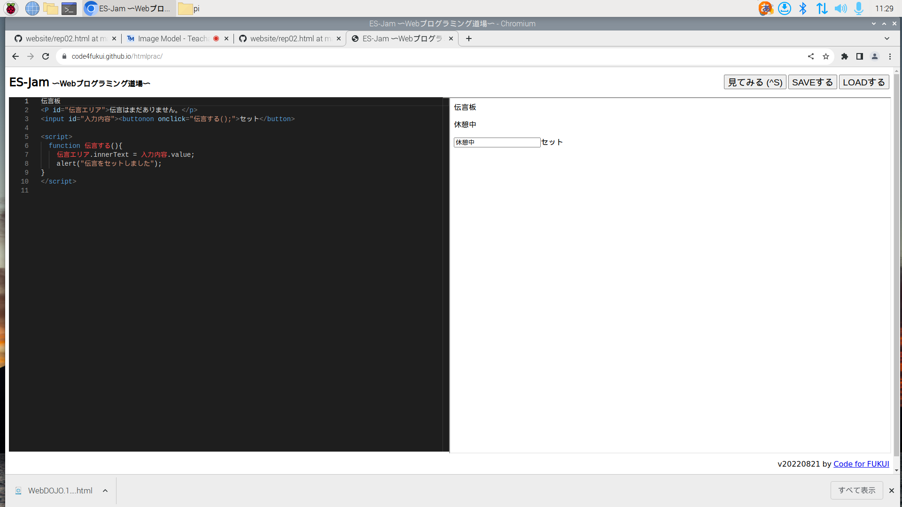

3-1 JavaScript体験：伝言プログラムを作る

伝言板
1.内容
プログラミング道場を使って伝言板プログラムを作成した。
2.感想
今までHTMｌにふれることがなかったので今回の授業で、シンプルな内容から複雑なプログラムを作っていくのは楽しかった。
改行したり入力したパーツを動かしたりするために、間違わずにコマンドを打っていくのは難しかった。
自分も一文字間違っていた部分があり、ボタンの枠がなくなっしまったけど先生方に指摘され、間違いに気づいたのでひとりでプログラムを作っている人はすごい集中力だと思った。
コマンドは多く完璧にマスターすには時間がかかりそうだけど、その分作れる幅が広がるのは自由でいいと思った。